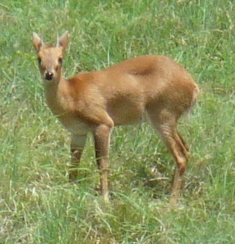

चौसिंगाFour-horned Antelope
Tetracerus quadricornis · Bovidae · MAM-0044

- Scientific name वैज्ञानिक नाम
- Tetracerus quadricornis (de Blainville, 1816)
- Family कुल
- Bovidae
- Hindi हिंदी
- चौसिंगा
- Local names स्थानीय नाम
- chousingha, chouka
- Status here यहाँ की स्थिति
- native
- Movement आवागमन
- Resident, here all year
- Known from कहाँ दर्ज
- Others have published records from the wider Awadh–Purvanchal plain, none yet from Basti–Ayodhya अवध–पूर्वांचल से दूसरों के प्रकाशित अभिलेख, बस्ती–अयोध्या से अभी नहीं
- IUCN IUCN
- VU
- Review समीक्षा
- not yet reviewed
When to look कब देखें
Present all year. साल भर मौजूद।
Tell it apart from इनसे अलग पहचानें
चौसिंगा / Four-horned Antelope
Tetracerus quadricornis (de Blainville, 1816) — Bovidae
चौसिंगा — पतले जंगलों और पहाड़ी या ऊबड़-खाबड़ इलाकों में रहने वाला एक छोटा और शर्मीला भारतीय हरिण। वयस्क नर के सिर पर चार छोटे सींग होते हैं—दो पीछे और दो छोटे आगे। मादा सींग-रहित होती है। ब्लैनफ़ोर्ड (1891) के अनुसार यह अकेला या जोड़ों में रहता है और कभी बड़े झुंड नहीं बनाता। वन्यजीव (संरक्षण) अधिनियम के तहत यह एक संरक्षित प्रजाति है।
Quick Identification त्वरित पहचान
| Feature | Description |
|---|---|
| Build & Size | Small slender antelope; height of male at shoulder 25 1/2 inches, at croup 27 inches (Blanford 1891) |
| Posterior Horns | Smooth, black, conical horns usually 3 to 4 inches long in adult males (Blanford 1891) |
| Anterior Horns | Shorter frontal hornlets usually 1 to 1 1/2 inches long; occasionally absent (Blanford 1891) |
| Dorsal Pelage | Dull pale brown with a more or less rufous tinge above (Blanford 1891) |
| Underparts | Passing gradually on the sides and limbs into the white of the lower parts (Blanford 1891) |
Field tip: Look for a small, solitary dull pale brown antelope with a rufous tinge in wooded or undulating terrain; adult males possess four distinct horns (two main posterior horns and two smaller anterior hornlets between the eyes) (Blanford 1891, p. 520).
हिंदी:
नर चौसिंगा अपने चार छोटे सींगों और भूरे-लाल रंग से पहचाना जाता है। यह बहुत शर्मीला होता है और अकेले या जोड़े में ही दिखाई देता है।
Morphology आकारिकी
Measurements as given by Blanford (1891, p. 520) for the Four-horned Antelope (Tetracerus quadricornis):
| Measurement | Range |
|---|---|
| Height of male at shoulder | 25 1/2 inches (Blanford 1891) |
| Height at croup | 27 inches (Blanford 1891) |
| Length from muzzle to rump | 42 inches (Blanford 1891) |
| Tail length | 5 inches (Blanford 1891) |
| Ear length | 4 1/2 inches (Blanford 1891) |
| Weight | 43 lb (Blanford 1891) |
| Posterior horns | usually 3 to 4 inches (Blanford 1891) |
| Anterior horns | 1 to 1 1/2 inches (Blanford 1891) |
Blanford (1891, p. 520) described the structure: "Colour dull pale brown, with a more or less rufous tinge above, passing gradually on the sides and limbs into the white of the lower parts. A dark stripe down the front of each leg, broadest on the fore limbs; muzzle and ears outside also dark."
The vernacular names recorded by Blanford (1891, p. 520) in Hindustani are: "Chousingha, Chouka ... H."
Vocalisations
Not available in consulted sources.
हिंदी:
ब्लैनफ़ोर्ड (1891) के अनुसार नर की ऊंचाई कंधे पर लगभग 25.5 इंच और वजन 43 पाउंड होता है। पीछे के सींग 3 से 4 इंच और आगे के सींग 1 से 1.5 इंच लंबे होते हैं। परामर्शित स्रोतों में आवाजों का कोई विवरण उपलब्ध नहीं है।
Behaviour & Ecology व्यवहार और पारिस्थितिकी
Blanford (1891, p. 521) recorded the habits: "This species differs from all other Indian antelopes in habits as much as in structure. It is not gregarious, very rarely are more than two seen together ; it haunts thin forest and bush, and keeps chiefly to undulating or hilly ground. It drinks daily, and is never seen far from water. It is a shy animal, and moves with a peculiar jerky action, whether walking or running."
Blanford (1891, p. 521) added: "The present species, according to Elliot, has the habit of depositing its dung repeatedly in one spot. This does not agree with my experience."
हिंदी:
ब्लैनफ़ोर्ड (1891) के अनुसार यह अन्य हरिणों से भिन्न स्वभाव रखता है। यह झुंड नहीं बनाता और बहुत कम ही दो से अधिक साथ देखे जाते हैं। यह पानी के स्रोतों के निकट विरल जंगलों और ऊबड़-खाबड़ इलाकों में रहता है।
Life Cycle / Phenology जीवन चक्र
Blanford (1891, p. 521) recorded: "The rutting-season is in the rains, and the young, one or two in number, are born about January or February, the period of gestation being, according to Hodgson, six months."
हिंदी:
ब्लैनफ़ोर्ड (1891) के अनुसार इसका प्रजनन काल वर्षा ऋतु में होता है और हॉजसन के अनुसार छह महीने के गर्भकाल के बाद जनवरी या फरवरी में एक या दो बच्चे पैदा होते हैं।
Host Plants or Prey आहार
Not available in consulted sources.
हिंदी:
परामर्शित ऐतिहासिक स्रोतों में आहार का विशिष्ट विवरण उपलब्ध नहीं है।
Predators / Natural Enemies शत्रु
Not available in consulted sources.
हिंदी:
परामर्शित स्रोतों में प्राकृतिक शत्रुओं का कोई विवरण उपलब्ध नहीं है।
Agricultural / Human Relevance कृषि प्रासंगिकता
Conservation legal status: Protected under the Wildlife (Protection) Act, 1972.
हिंदी:
यह वन्यजीव (संरक्षण) अधिनियम, 1972 के तहत संरक्षित है।
Expected Locally स्थानीय रूप से अपेक्षित
Not a field record. Written from published accounts for eastern Uttar Pradesh. No confirmed local sighting yet — if you have seen it, that is what the atlas needs.
अभी तक स्थानीय पुष्टि नहीं। यह विवरण प्रकाशित स्रोतों से है, किसी अवलोकन से नहीं।
GBIF holds published records from the wider plain: two Field Museum specimens, collected by J. C. Faunthorpe in July 1928, labelled "Kheri, Oudh"; GBIF files them under Faizabad. There are no later records. A photograph with place and date would constitute a first record for the atlas.
हिंदी:
फील्ड म्यूजियम में जे. सी. फॉनथॉर्प द्वारा जुलाई 1928 में 'खीरी, अवध' से एकत्र किए गए दो नमूने हैं, जिन्हें जीबीआईएफ फैजाबाद के तहत दर्ज करता है। इसके बाद का कोई रिकॉर्ड नहीं है। बस्ती या अयोध्या से कोई रिकॉर्ड नहीं है। स्थान और तारीख के साथ एक फोटो एटलस के लिए पहला रिकॉर्ड होगी।
Distribution वितरण
Global range: Native to the Indian subcontinent; Blanford (1891, p. 520) recorded: "Along the base of the Himalayas from the Punjab to Nepal, and probably in most parts of the Peninsula where the country is wooded and hilly, but not in dense jungle. The four-horned antelope is not found in the Gangetic plain nor on the Malabar coast in the Madras Presidency."
In India: Blanford (1891, p. 520) noted: "It is common in the wooded parts of Rajputana, throughout the Bombay Presidency, the Central Provinces, and the northern parts of Madras, less abundant to the eastward in Chhattisgarh, Chutia Nagpur, Bengal, and Orissa".
In Uttar Pradesh: Two Field Museum specimens, collected by J. C. Faunthorpe in July 1928, labelled "Kheri, Oudh"; GBIF files them under Faizabad. Nothing later is recorded.
In Basti district / eastern UP: GBIF holds no record from Basti or Ayodhya.
हिंदी:
ब्लैनफ़ोर्ड (1891) के अनुसार यह पंजाब से नेपाल तक हिमालय की तलहटी में और प्रायद्वीपीय भारत के पहाड़ी जंगलों में पाया जाता था, किंतु गंगा के मैदानी भाग में नहीं मिलता था। बस्ती और अयोध्या से इसका कोई आधुनिक रिकॉर्ड नहीं है।
Research Questions शोध प्रश्न
- What habitat factors along the Himalayan foothills historically delimited the range of Tetracerus quadricornis from the Gangetic plain? / हिमालय की तलहटी के कौन से आवास कारक ऐतिहासिक रूप से चौसिंगा के वितरण को गंगा के मैदान से अलग करते थे?
- What archival records exist regarding Faunthorpe's 1928 collections in Kheri? / खीरी में फॉनथॉर्प के 1928 के संग्रह के संबंध में कौन से अभिलेखीय रिकॉर्ड मौजूद हैं?
- How do historical specimen records from the Terai foothills correlate with modern forest boundaries?
- What ecological characteristics distinguish foothill woodland habitats from alluvial lowlands that the species avoids?
- What survey techniques are suitable for detecting solitary antelopes in dense brush along forest edges?
हिंदी:
1. हिमालय की तलहटी के कौन से आवास कारक ऐतिहासिक रूप से चौसिंगा के वितरण को गंगा के मैदान से अलग करते थे?
2. खीरी में फॉनथॉर्प के 1928 के संग्रह के संबंध में कौन से अभिलेखीय रिकॉर्ड मौजूद हैं?
Similar Species मिलती-जुलती प्रजातियाँ
| Species | How to tell apart | हिंदी | |
|---|---|---|---|
| [[hog_deer | Hog Deer]] (Axis porcinus) | Easily mistaken in jungle; stouter deer build; lacks facial hornlets; branched antlers in males | पाड़ा |
| [[blackbuck | Blackbuck]] (Antilope cervicapra) | Larger size; adult males black-and-white with long spiralled horns; inhabits open plains | काला हिरण |
| [[barking_deer | Barking Deer]] (Muntiacus vaginalis) | Deep reddish coat; males possess short antlers mounted on skin-covered pedicels; prominent canine tusks | काकड़ |
| [[nilgai | Nilgai]] (Boselaphus tragocamelus) | Massive horse-sized build; blue-grey coat in bulls; two straight horns | नीलगाय |
Field rule: Solitary habits, small size, dull pale brown pelage, with a more or less rufous tinge above, and four horn points in adult males distinguish the species; Blanford (1891, p. 520) noted: "In jungle this species and hog-deer (Cervus porcinus) may easily be mistaken the one for the other".
Taxonomy & Classification वर्गीकरण
Original description. Described by Henri Marie Ducrotay de Blainville in 1816 in Bulletin des Sciences, par la Société Philomathique de Paris (vol. 1816, p. 75), under the basionym Cerophorus quadricornis.
Subspecies. Not available in consulted sources.
Family and order placement. Order Artiodactyla, family Bovidae, subfamily Bovinae, genus Tetracerus.
Phylogenetic notes. Not available in consulted sources.
IUCN status rationale. Evaluated as Vulnerable (VU) on the IUCN Red List (IUCN SSC Antelope Specialist Group 2017).
हिंदी:
हेनरी डी ब्लेनविले ने 1816 में इसका वर्णन किया था। यह बोविडे परिवार का सदस्य है और आईयूसीएन रेड लिस्ट में 'असुरक्षित' (Vulnerable) श्रेणी में सूचीबद्ध है।
Photo Gallery फोटो गैलरी
No photos yet — add field photos to media/species/four_horned_antelope/ and run node scripts/sync_photos.js.
Photos needed आवश्यक फोटो
- [ ] Adult male showing four horn points (चार सींगों वाला वयस्क नर)
- [ ] Individual foraging in dry deciduous woodland (जंगल में चारा चरता हुआ चौसिंगा)
References संदर्भ
- Blainville, H. M. D. de (1816). Sur plusieurs espèces de Vrais Antilopes. Bulletin des Sciences, par la Société Philomathique de Paris, vol. 1816, p. 75 (as Cerophorus quadricornis).
- Blanford, W. T. (1891). The Fauna of British India, Including Ceylon and Burma. Mammalia. Part II. Taylor & Francis, London, pp. 519–521 (as Tetracerus quadricornis).
- Prater, S. H. (1971). The Book of Indian Animals. 3rd ed. Bombay Natural History Society, Bombay.
- Menon, V. (2014). Indian Mammals: A Field Guide. Hachette India, Gurgaon.
- IUCN SSC Antelope Specialist Group (2017). Tetracerus quadricornis. The IUCN Red List of Threatened Species 2017: e.T21661A50195368. doi:10.2305/IUCN.UK.2017-2.RLTS.T21661A50195368.en
- GBIF Occurrence Data — Tetracerus quadricornis, India (2025).
Source file: species/fauna/mammals/four_horned_antelope.md